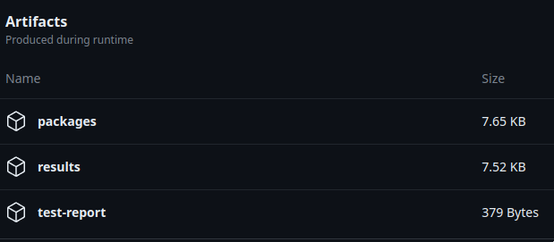
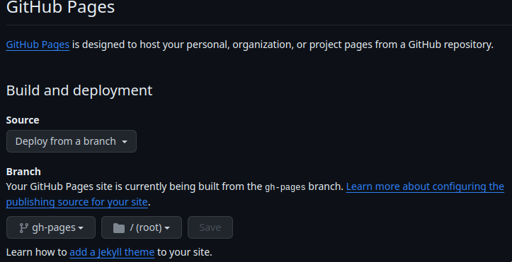

GitHub Actions CI¶
This is optional cookiecutter template option, which result in .github directory creation which contains workflows.
It generates two workflows: one standard CI and second only for building documentation.
CI Workflow¶
By default each base branch and pull request will trigger CI workflow.
The workflow is defined in .github/workflows/ci.yml file.
It consists of two major jobs:
Run linters
runs
pre-commitchecks to validate formatting, code style, type hints, security and other checks.runs
trivyto check for security vulnerabilities (will add new comment to PR).checks licenses against list of allowed licenses.
generates
pip freezeto provide reproducible build.validate if python package can be build with thebuild tool.
Run tests
runs
pytesttests with code coverage (cobertura format).report test results to GitHub (will add new check).
report code coverage (will add new comment to PR).

Code coverage¶
Default code coverage recommended setup is one which uses additional branch to track coverage changes and comment on PRs.

Artifacts¶
There are generated artifacts which can be downloaded from GitHub UI.

packages:
dist/ - contains built python package
results:
trivy-scanning-results.txt - contains trivy security scan results rendered as ascii table
licenses.txt - contains dump of libraries with detected licenses
requirements-freeze.txt - pip freeze to provide reproducible build
test-report:
contains just
report.xmlwith results of executed tests
License validation¶
We use pip-licenses to extract installed packages and obtain license information.
By default, we accept only those selected licenses from .license-whitelist.txt.
Each short license must be in new line and it is matched by checking if string exists in line.
Sometimes there are situations when a license library detection does not work or there is a justified decision
to accept some license - to accept such library edit .libraries-whitelist.txt.
All libraries must be put in single line.
Warning
.license-whitelist.txt must have a license in each distinct line.
.libraries-whitelist.txt must be contained in single line (e.g. “foo bar”).
GitHub Actions hints¶
Please get familiar with official documentation before you modify the yaml configuration.
Changing YAML is error-prone so here are protips:
Visual Studio Code (and maybe other editors too) have an extension which helps with Github Actions - it can be found here.
Use YAML validator in your editor to fix wrong whitespaces.
Operate on branch first or create a temporary test repository.
ifand similar conditions should be added last, after testing a job.
Documentation workflow¶
GitHub Pages¶
By default Github Actions pipelines have documentation workflow which will build sphinx documentation automatically on main branch - and it will push it to a branch - it can be hosted on Github Pages if you enable it.
To access it, you need to enable it, on Github repository -> Settings -> Pages page select Deploy from a branch and select gh-pages. Link will appear here after deployment.
Warning
Only on Github Enterprise you can make it private and limit it to only people with repository access.
Please read more about it here.
